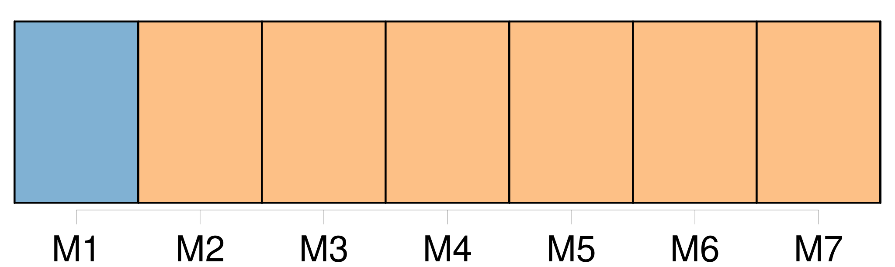
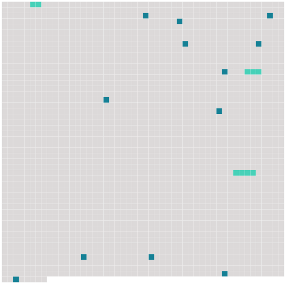

Longueur nb maillons : 15 mentions |
  |
Pendant quatre années encore, [ce ménage] , harcelé par la misère, ne connut d'autres distractions que la promenade aux Champs-Elysées, le dimanche, et quelques soirées au théâtre, une ou deux par hiver, grâce à des billets de faveur offerts par un collègue. [2 phrases]
» « Ma foi, s'écria Hector, une fois n'est pas coutume ; [nous] louerons un break pour toi, les petits et la bonne, et moi je prendrai un cheval au manège. [1 phrases]
» [6 phrases] Tu verras comme je monte ; et, si tu veux, [nous] reviendrons par les Champs-Elysées au moment du retour du Bois. Comme [nous] ferons bonne figure, je ne serais pas fâché de rencontrer quelqu'un du Ministère. [7 phrases]
»
» [10 phrases]
» [3 phrases]
» [28 phrases]
Et [sa famille, affolée] , s'éloigna. [48 phrases]
»
[On] économisa davantage encore, la gratification tout entière y passa. [6 phrases]
Et, quand Hector apporta cette nouvelle à sa femme, elle se laissa choir sur une chaise en balbutiant :
» |
 |
La ressource peut être téléchargée sur la page Ortolang
Si vous avez des questions ou vous voyez des erreurs, merci d'envoyer un mail à silvia.federzoni89@gmail.com
Site développé par S. Federzoni (contact)